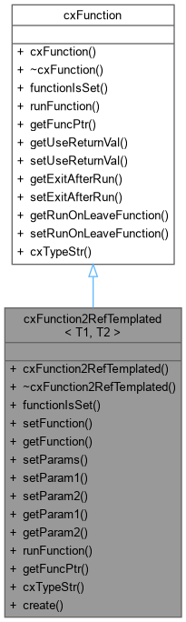

This class is a cxFunction that is templated to take 2 references of specific types. More...
#include <cxFunction.h>


Public Types | |
| using | FuncPtr = std::string(*)(T1 &, T2 &) |
Public Member Functions | |
| cxFunction2RefTemplated (FuncPtr pFuncPtr, T1 &pParam1, T2 &pParam2, bool pUseReturnVal=false, bool pExitAfterRun=false, bool pRunOnLeaveFunction=true) | |
| Default constructor. All parameters have default values. | |
| virtual | ~cxFunction2RefTemplated () |
| virtual bool | functionIsSet () const override |
| void | setFunction (FuncPtr pFuncPtr) |
| FuncPtr | getFunction () const |
| Accessor for the internal function pointer. | |
| void | setParams (T1 &pParam1, T2 &pParam2) |
| void | setParam1 (T1 &pParam) |
| void | setParam2 (T2 &pParam) |
| const T1 & | getParam1 () const |
| const T2 & | getParam2 () const |
| virtual std::string | runFunction () const override |
| virtual void * | getFuncPtr () const override |
| virtual std::string | cxTypeStr () const override |
| Returns the name of the cxWidgets class, "cxFunction2RefTemplated". This can be. | |
 Public Member Functions inherited from cxFunction Public Member Functions inherited from cxFunction | |
| cxFunction (bool pUseReturnVal, bool pExitAfterRun, bool pRunOnLeaveFunction) | |
| Constructor. | |
| virtual | ~cxFunction () |
| virtual bool | getUseReturnVal () const |
| Accessor for whether the caller should use the return value. | |
| virtual void | setUseReturnVal (bool pUseReturnVal) |
| Setter for whether or not the caller should make use of the return value. | |
| virtual bool | getExitAfterRun () const |
| Accessor for whether the caller should exit after the function. | |
| virtual void | setExitAfterRun (bool pExitAfterRun) |
| Setter for whether or not the caller should quit what. | |
| virtual bool | getRunOnLeaveFunction () const |
| Accessor for whether the caller should run its onLeave function. | |
| virtual void | setRunOnLeaveFunction (bool pRunOnLeaveFunction) |
| Setter for whether or not the caller should run its. | |
Static Public Member Functions | |
| static std::shared_ptr< cxFunction2RefTemplated< T1, T2 > > | create (FuncPtr pFuncPtr, T1 &pParam1, T2 &pParam2, bool pUseReturnVal=false, bool pExitAfterRun=false, bool pRunOnLeaveFunction=true) |
| Static create method for cxFunction2RefTemplated. This is the recommended way to create a cxFunction2RefTemplated, as it returns a shared pointer to the created object. | |
Detailed Description
class cxFunction2RefTemplated< T1, T2 >
This class is a cxFunction that is templated to take 2 references of specific types.
Member Typedef Documentation
◆ FuncPtr
| using cxFunction2RefTemplated< T1, T2 >::FuncPtr = std::string (*)(T1&, T2&) |
Constructor & Destructor Documentation
◆ cxFunction2RefTemplated()
|
inlineexplicit |
Default constructor. All parameters have default values.
available. Note that function must have this signature:
string func(void*, void*)
- Parameters
-
pFuncPtr Pointer to the function to be run. Defaults to nullptr. pParam1 The first parameter to pass to the function when it's run pParam2 The second parameter to pass to the function when it's run pUseReturnVal Indicates whether caller will make use of return value. Defaults to false pExitAfterRun Whether or not the caller should exit from its input loop once the function is done. Defaults to false. pRunOnLeaveFunction Whether or not the caller should run its onLeave function when it exits (useful if pExitAfterRun is true). This defaults to true.
◆ ~cxFunction2RefTemplated()
|
inlinevirtual |
Destructor
Member Function Documentation
◆ create()
|
inlinestatic |
Static create method for cxFunction2RefTemplated. This is the recommended way to create a cxFunction2RefTemplated, as it returns a shared pointer to the created object.
Referenced by formWithFKeys(), getFormKeys(), and inputsWithFKeys().
◆ cxTypeStr()
|
inlineoverridevirtual |
Returns the name of the cxWidgets class, "cxFunction2RefTemplated". This can be.
used to determine the type of cxWidgets object that deriving
classes derive from in applications.
- Returns
- The name of the cxWidgets class ("cxFunction2RefTemplated").
Implements cxFunction.
◆ functionIsSet()
|
inlineoverridevirtual |
Returns whether the internal funtion pointer is set.
- Returns
- Returns true if the internal function pointer is set (not null), or false otherwise.
Implements cxFunction.
◆ getFuncPtr()
|
inlineoverridevirtual |
Implements cxFunction.
◆ getFunction()
|
inline |
Accessor for the internal function pointer.
- Returns
- The internal function pointer
◆ getParam1()
|
inline |
Accessor for the first function parameter
- Returns
- Returns the first parameter
◆ getParam2()
|
inline |
Accessor for the second function parameter
- Returns
- Returns the second parameter
◆ runFunction()
|
inlineoverridevirtual |
If function pointer is not null, runs the function and returns its return value; If function pointer is nullptr, returns empty string
- Returns
- Returns return value of function pointed to if pointer is not null, otherwise returns empty string
Implements cxFunction.
◆ setFunction()
|
inline |
Sets the internal function pointer
- Parameters
-
pFuncPtr The function to which to point
◆ setParam1()
|
inline |
Sets the first parameter
- Parameters
-
pParam First parameter to pass to function
◆ setParam2()
|
inline |
Sets the second parameter
- Parameters
-
pParam Second parameter to pass to function
◆ setParams()
|
inline |
Sets the parameters to pass to the function.
- Parameters
-
pParam1 First parameter to pass to function pParam2 Second parameter to pass to function
The documentation for this class was generated from the following file:
- /home/erico/projects/cxWidgets/src/cxFunction.h